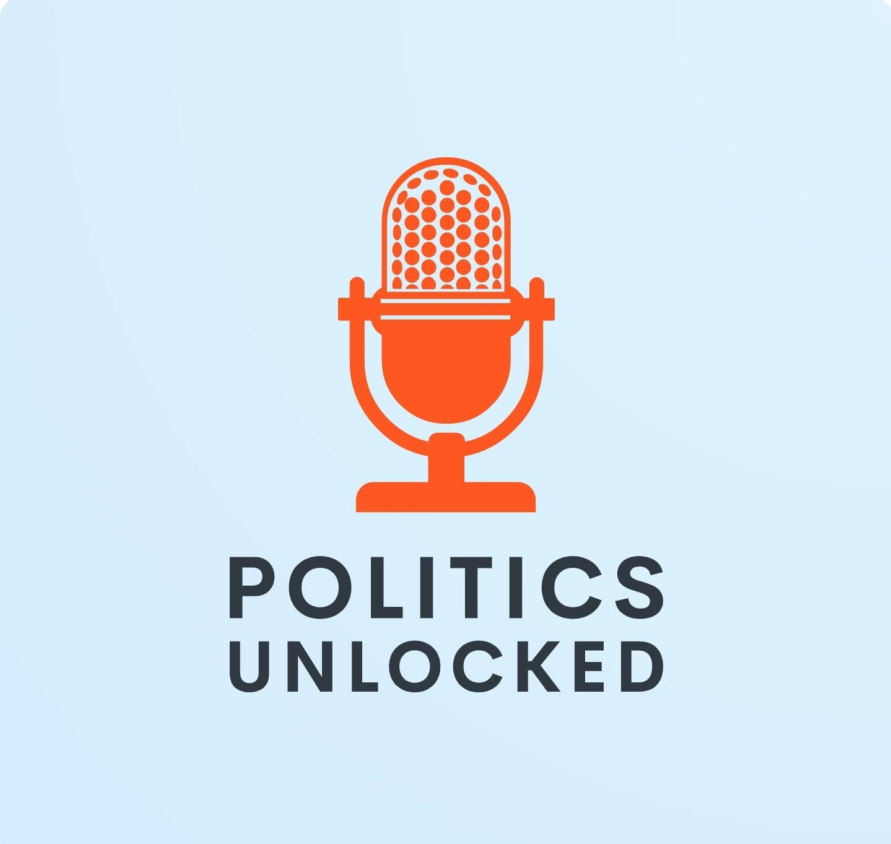

A UK politics podcast where we break down and discuss the main news and events of the week. We look at major topics such as Brexit and COVID, as well as discussing how government policy affects the lives of ordinary people. Find us on Apple, Google and Spotify Podcasts - or Tweet at us: @PoliticUnlocked and say hello.
Latest Episode
UK government cosying up to Biden, Conservative party factions, The university evacuation plan.
Posted on Friday, Nov 13, 2020
How will the government manage a Biden administration? New groups emerge in the Conservative party. Will Nigel Farage’s Trimp-like tactics take off here? How will the university evacuation work? Read More
Is the U.K. prepared for the Climate Crisis? (Interview with Matthew Snedker)
Posted on Wednesday, Nov 11, 2020
In this episode, I speak to Green Party councillor Matthew Snedker about the Climate Crisis, Green Energy, how the FPTP system drives extremism in U.K. politics.